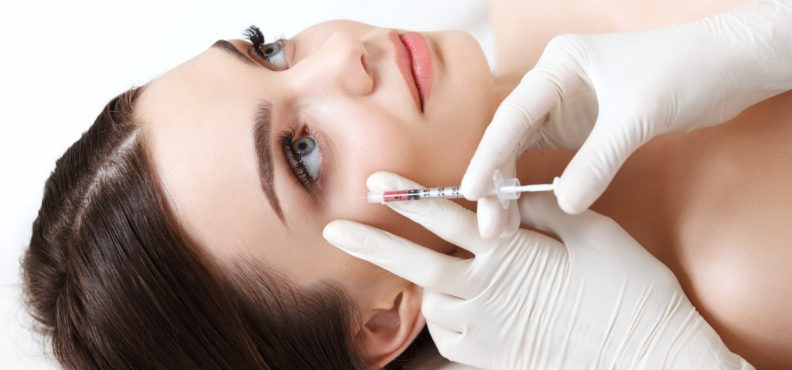
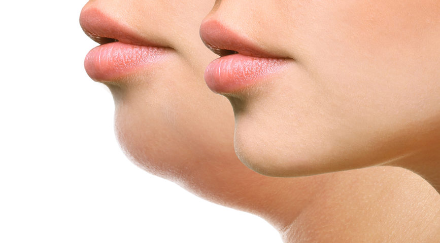
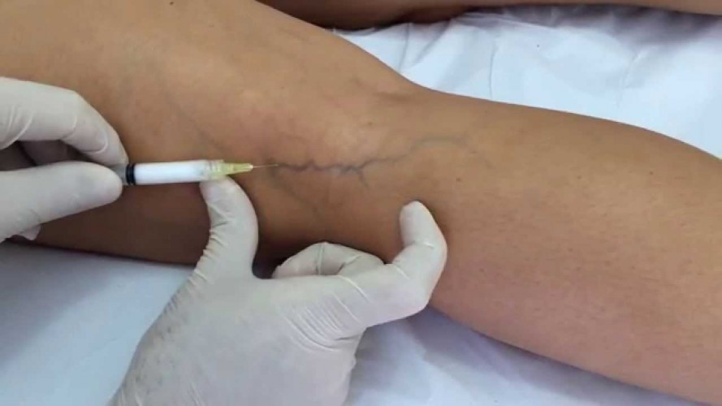

Botox
Utilizamos a Toxina Botulínica para o tratamento de rugas dinâmicas, marcas de expressão, para mudar o desenho das sobrancelhas (arqueamento) e suor excessivo (hiperidrose). As rugas dinâmicas são aquelas formadas pela contração muscular, como os pés de galinha e linhas da testa.
Lipólise de Papada
É um procedimento estético que vem conquistando adeptos que desejam eliminar a gordura presente na parte debaixo do queixo, deixar o maxilar mais definido e elevar a autoestima.
Escleroterapia
A escleroterapia é um tipo de tratamento indicado para tratar de varizes e vasinhos nas pernas, sem a necessidade de realizar cirurgias e procedimentos mais invasivos. Por vezes, ela também pode aparecer com o nome de escleroterapia de varizes.
Intradermoterapia
É uma técnica pouco invasiva que consiste na utilização de injeções com medicamentos e vitaminas em locais do corpo a serem tratados.